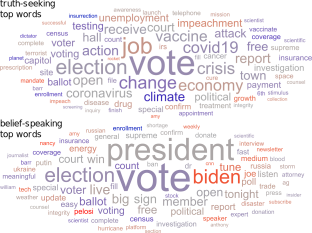
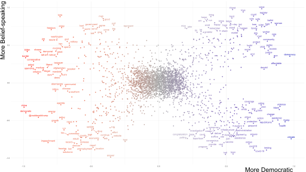
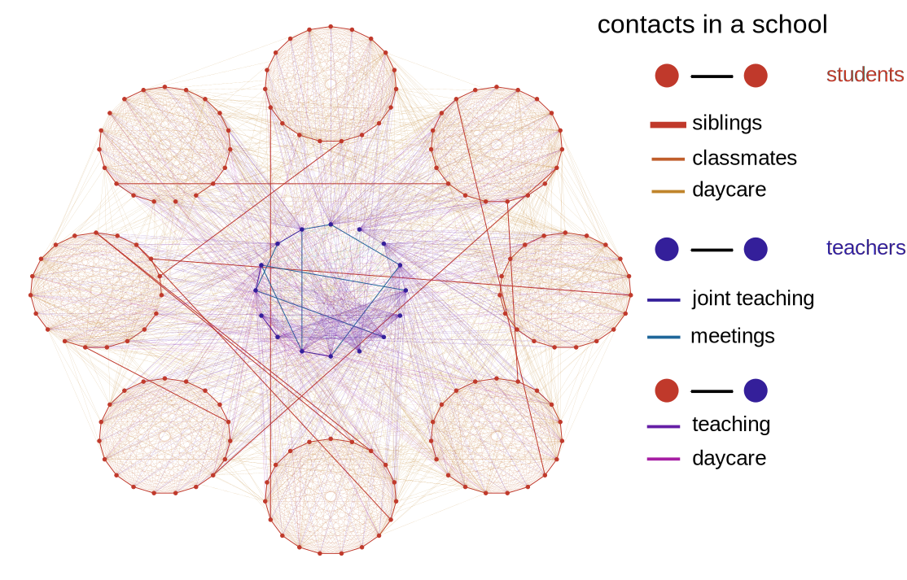

Visualize your data: DOs and DONT's
Some design principles
The Minard Map
Matplotlib & Seaborn
Matplotlib
import matplotlib.pyplot as plt
fig = plt.figure()
Matplotlib
import matplotlib.pyplot as plt
fig, ax = plt.subplots()
Matplotlib
import matplotlib.pyplot as plt
fig, axes = plt.subplots(1, 2, figsize=(12, 4))
Matplotlib
import matplotlib.pyplot as plt
fig, axes = plt.subplots(1, 2, figsize=(4, 8))
x = [0.2, 0.6]
y = [0.4, 0.5]
axes[0].scatter(x, y, s=60)
axes[1].bar(x, y, width=0.1)
Matplotlib
import matplotlib.pyplot as plt
fig, axes = plt.subplots(1, 2, figsize=(4, 8))
x = [0.2, 0.6]
y = [0.4, 0.5]
axes[0].scatter(x, y, s=200, color="r")
axes[1].bar(x, y, width=0.1)
axes[1].set_xticks([])
axes[1].set_title("a barchart", fontsize=16)
Modify overall aesthetics in plot call.
Modify individual elements via set_element(attribute).
Seaborn
A high-level interface to Matplotlib for statistical analyses. Get inspiredy by the gallery.
import seaborn as sns
sns.set_theme(style = "whitegrid")
iris = sns.load_dataset("iris")
iris = pd.melt(iris, "species", var_name = "measurement")
fig, ax = plt.subplots()
sns.stripplot(
data = iris,
x = "value",
y = "measurement",
hue = "species",
dodge = True,
alpha = .25,
ax = ax
)
ax.set_ylabel("")

Why Matplotlib?
... Matplotlib is a pain in the ass to learn.
I know Matplotlib.
Great synergy with seaborn.
Other packages like networkx build on it.
Matplotlib offers very fine control over all figure elements.
For publication-level plots it pays off to learn Matplotlib.
Overview: Python plotting packages
| package | style | pro | con |
|---|---|---|---|
| matplotlib | object oriented | very customizable, many extensions | very complex |
| seaborn | declarative | very sensible defaults, easy(er) to use | less customizable, but can fall back to matplotlib |
| plotly | declarative | easy to use, made for interactive visualizations, also available for R | less customizable, getting used to web apps might take some getting used to |
| altair | declarative | easy to use | less customizable |
| bokeh | grammar of graphics | rather straight forward to use, can handle very big data | less customizable, getting used to web apps might take some getting used to |
| plotnine | grammar of graphics | similar to ggplot2 in R, straight forward to use | less customizable |
Plot types
| dim 1 | dim 2 | type | function |
|---|---|---|---|
| numerical | - | histogram | sns.histplot() |
| numerical | categorical | bar chart | sns.barplot() |
| numerical | time | time series | ax.plot() |
| numerical | numerical | scatter plot | sns.scatterplot() |
Example study
"New conceptions of truth foster misinformation in online public political discourse"
(-) Conceptions of "truth" splinter into two distinct camps.
(-) "Truth-seeking" aims to uncover factual information and update one's beliefs.
(-) "Belief-speaking" conceptualizes truth as "authenticity" and "speaking one's mind".
(-) We measure "truth-seeking" and "belief-speaking" in tweets by U.S. Congress Members.
Example data
"New conceptions of truth foster misinformation in online public political discourse"
Histogram: number of tweets per account
import matplotlib.pyplot as plt
import seaborn as sns
users = pd.read_csv("users.csv")
sns.histplot(
data=users,
x="tweet_count"
)
Adapt aspect ration to data
fig, ax = plt.subplots(figsize=(8, 4))
sns.histplot(
data=users,
x="tweet_count",
ax=ax
)
Choose intuitive bin width
fig, ax = plt.subplots(figsize=(8, 4))
sns.histplot(
data=users,
x="tweet_count",
ax=ax,
bins=range(0, 3510, 250),
shrink=0.8
)
De-cluttering
fig, ax = plt.subplots(figsize=(8, 4))
sns.histplot(
data=users,
x="tweet_count",
ax=ax,
bins=range(0, 3510, 250),
shrink=0.8,
edgecolor=None
)
ax.spines["top"].set_visible(False)
ax.spines["right"].set_visible(False)
ax.set_xlabel("Tweet count", fontsize=16)
ax.set_ylabel("User count", fontsize=16)
Barchart: two categories
fig, ax = plt.subplots(figsize=(8, 4))
sns.barblot(
data=belief_speaking,
x="proportion",
y="time_period",
hue="party",
ax=ax
)
Use known metaphors
fig, ax = plt.subplots(figsize=(8, 4))
sns.barblot(
data=belief_speaking,
x="proportion",
y="time_period",
hue="party",
ax=ax,
palette=["#0015BC", "#FF0000"],
hue_order=["Democrat", "Republican"]
)
De-cluttering
sns.barblot(
data=belief_speaking,
x="proportion",
y="time_period",
hue="party",
ax=ax,
palette=["#0015BC", "#FF0000"],
hue_order=["Democrat", "Republican"]
)
ax.spines['right'].set_visible(False)
ax.spines['top'].set_visible(False)
ax.legend(frameon=False, fontsize=16)
ax.set_ylabel("")
ax.set_xlabel("% of Tweets", fontsize=16)
ax.tick_params(axis='both', labelsize=12)
Alternative category representation
sns.barblot(
data=belief_speaking,
x="proportion",
y="party",
hue="time_period",
ax=ax,
palette=[(0.5, 0.5, 0.5), (0.2, 0.2, 0.2)],
hue_order=["2010 to 2013", "2019 to 2022"]
)
Time-series: number of tweets
counts = pd.read_csv(
"tweet_counts.csv",
parse_dates = ["date"]
)
counts = counts.set_index("date")
dem = counts[counts["party"] == "Democrat"]
rep = counts[counts["party"] == "Republican"]
fig, ax = plt.subplots(figsize = (9, 4))
ax.plot(
dem.index,
dem["tweet_count"],
color = "#0015BC",
)
Rolling average
counts = counts.set_index("date")
dem = counts[counts["party"] == "Democrat"]\
.rolling("90D").mean()
rep = counts[counts["party"] == "Republican"]\
.rolling("90D").mean()
fig, ax = plt.subplots(figsize = (9, 4))
ax.plot(
dem.index,
dem["tweet_count"],
color = "#0015BC",
)
Labels & de-cluttering
fig, ax = plt.subplots(figsize = (9, 4))
ax.plot(
dem.index,
dem["tweet_count"],
color = "#0015BC",
label="Democrat"
)
ax.set_ylabel("Tweet count", fontsize=12)
ax.legend(frameon=False, loc=6)
ax.spines['right'].set_visible(False)
ax.spines['top'].set_visible(False)
Annotations
p_elections = [pd.to_datetime(date) for\
date in ["2012-11-06", "2016-11-08", "2020-11-03"]]
s_elections = [pd.to_datetime(date) for\
date in ["2013-11-05", "2014-11-04", "2015-11-03",
"2017-11-07", "2018-11-06", "2019-11-05"]]
for el in p_elections:
ax.plot([el, el], [0, 750], color="k")
for el in s_elections:
ax.plot([el, el], [0, 600], "--", color="grey")
ax.text(pd.to_datetime("2013-07-01"), 650,
"Congress elections", color="grey", fontsize=12)
ax.text(pd.to_datetime("2015-03-01"), 800,
"Presidential elections", color="k", fontsize=12)
Scatterplot: followers vs. following
fig, ax = plt.subplots(figsize = (7, 4))
sns.scatterplot(
data = users,
x = "followers_count",
y = "following_count",
hue = "party",
palette = ["#0015BC", "#FF0000"],
hue_order = ["Democrat", "Republican"],
ax = ax
)
Logarithmic axis scales
fig, ax = plt.subplots(figsize = (7, 4))
sns.scatterplot(
data = users,
x = "followers_count",
y = "following_count",
hue = "party",
palette = ["#0015BC", "#FF0000"],
hue_order = ["Democrat", "Republican"],
ax = ax
)
ax.set_yscale("log")
ax.set_xscale("log")
Labels & de-cluttering
sns.scatterplot(
data = users,
x = "followers_count",
y = "following_count",
hue = "party",
palette = ["#0015BC", "#FF0000"],
hue_order = ["Democrat", "Republican"],
ax=ax
)
ax.set_xlabel("followers", fontsize=12)
ax.set_ylabel("following", fontsize=12)
ax.legend(frameon=False, fontsize=12)
ax.spines['right'].set_visible(False)
ax.spines['top'].set_visible(False)
Adding another data dimension
sns.scatterplot(
data = users,
x = "followers_count",
y = "following_count",
size = "N_tweets",
hue = "party",
palette = ["#0015BC", "#FF0000"],
hue_order = ["Democrat", "Republican"],
alpha = 0.3,
linewidth = 0,
ax = ax
)
ax.legend(frameon = False, loc = 9, fontsize = 12,
bbox_to_anchor = [1.2, 0.9, 0, 0],
)
Visualizing words: wordcloud
Visualizing words: scattertext
Visualizing words: Word Shift Graphs
Visualizing networks: spring layout

Visualizing networks: known underlying structure
Random things I thought might be helpful
Colors
Image filetypes
plt.savefig("my_figure.png", dpi=300)
# great to import in Inkscape or Adobe Illustrator
plt.savefig("my_figure.svg")
plt.savefig("my_figure.pdf")
# this does not work :(
plt.savefig("my_figure.eps")
Plot coding style: use functions
def PlotSomethingNice(ax, data, param="xy"):
...
...
def PlotAnotherNiceThing(ax, data, param="xy"):
...
...
fig, axes = plt.subplots(2, 2)
PlotSomethingNice(axes[0][0], subset1, param="first part")
PlotSomethingNice(axes[0][1], subset2, param="second part")
PlotAnotherNiceThing(axes[1][0], df, param="do this")
PlotAnotherNiceThing(axes[1][1], df, param="do something else")
Large data
Problem 1: since every data point is an object, Matplotlib gets VERY slow for large amounts of data.
Problem 2: figure files also get VERY large because of this.
Solution 1: subsample your data.
less_data = lots_of_data.sample(frac=0.05, random_state=42)
Solution 2: rasterize your figures and save as .png.
Summary
Matplotlib + Seaborn offers both high abstraction and excessive detail.
Use known visual metaphors and de-clutter your plots for maximum clarity.
Whenever you do something unexpected in your visuals (resampling or excluding data, truncating axes), DESCRIBE IT in the text.